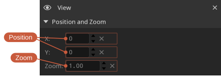
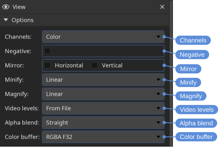
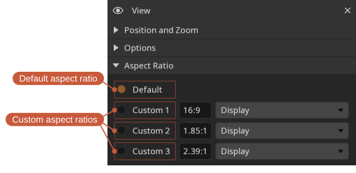
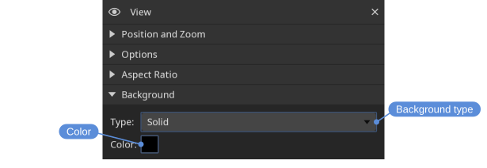
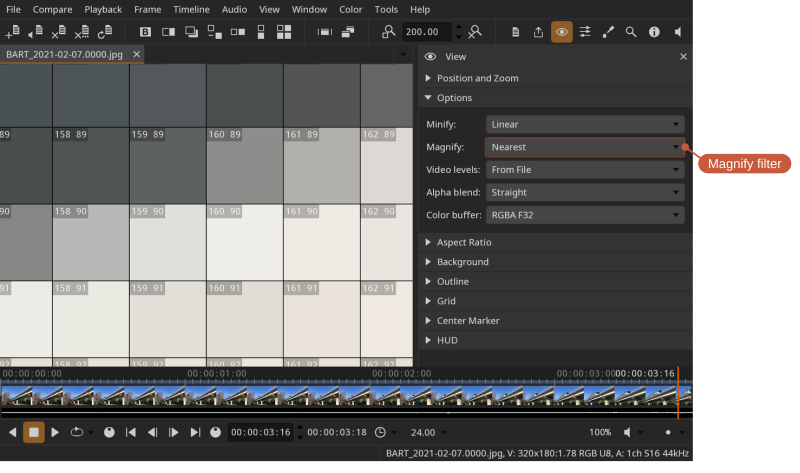
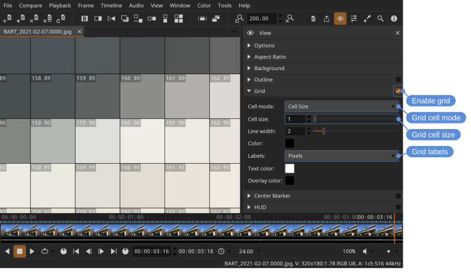
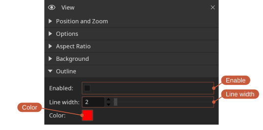
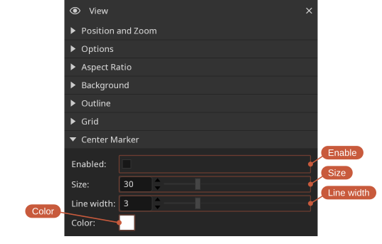
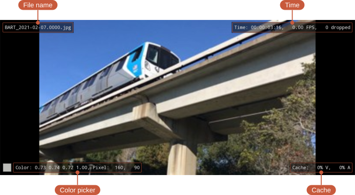
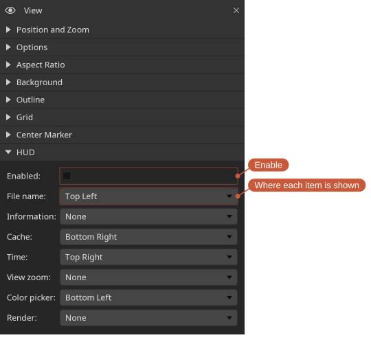

View
The view displays the current file. You can pan, zoom, or frame the view so the image fills the available space.
Default view controls:
- Pan — Middle mouse button
- Zoom — Mouse wheel, or the - and = keys
- Frame view (fit image to view) — Backspace
- Wipe (in compare mode) — Alt + left mouse button
- Color picker — Ctrl + left mouse button
- Frame shuttle (scrub frames by dragging) — Left mouse button
View controls can be remapped in the Mouse section of the Settings tool.
Framing and zoom
The view can be framed (fit to the view), reset to 1:1, or zoomed in and out from the View menu and the zoom control on the View tool bar.
Locations: View menu, View tool bar, View tool
Color channels
Individual color channels can be isolated to inspect them.
Locations: View menu
Shortcuts:
- Red — R
- Green — G
- Blue — B
- Alpha — A
Mirror
The image can be mirrored horizontally or vertically.
Locations: View menu
Shortcuts:
- Mirror horizontal — H
- Mirror vertical — V
Position and zoom
The Position and Zoom section of the View tool shows the exact view position and zoom level, and lets you set them numerically.
Locations: View tool

Options

- Minify — Filter used when the image is scaled down (Nearest, Linear or High Quality).
- Magnify — Filter used when the image is scaled up (Nearest, Linear or High Quality). Use Nearest to see individual pixels without smoothing.
- Video levels — How video levels are interpreted: from the file, full range, or legal range.
- Alpha blend — How the alpha channel is blended: none, straight, or pre-multiplied.
- Color buffer — The view's bit depth. The default, RGBA F32, is recommended because it preserves the full range of color values without clamping. Lower bit-depth options can be faster, but they can clamp colors — choose them only when performance is more important than precision.
High Quality weighs many more pixels than Linear, which reads only four whatever the scale. The difference shows most where the scale is largest — a thumbnail, or the view zoomed well out — where Linear misses most of the image and fine detail breaks up into aliasing that crawls during playback.
It costs more than Linear, and the two directions cost differently:
- Scaling down is bounded, and gets cheaper the further out you zoom, because there are fewer pixels on screen to produce.
- Scaling up is the opposite: the cost follows the size of the view, so it is highest on a large display at a high zoom.
If playback drops frames, this is one of the settings to try at Linear — along with Color buffer — and the HUD's Time item reports the frames dropped while you compare them.
Aspect ratio
The pixel aspect ratio can be left at the file's default or overridden. Up to three custom aspect ratios can be defined.
Locations: View menu, View tool

Background
The view background color can be customized.
Locations: View tool

Grid
A grid overlay can be shown to identify areas in the view.
Locations: View menu, View tool
Shortcut: Ctrl+G


The grid can also help you inspect individual pixels. To do so:
- Set Magnify to Nearest
- Enable the grid
- Set the grid cell mode to
Cell Size - Set the grid size to
1 - Set the grid labels
Outline
An outline can be drawn around the image to make transparent regions easier to distinguish from the background.
Locations: View tool

Center marker
A marker can be shown at the center of the view to help with alignment and framing. Its size, line width, and color can be customized.
Locations: View menu, View tool

HUD
The heads-up display (HUD) overlays useful information on top of the view.
Locations: View menu, View tool
Shortcut: Ctrl+H

- File name - Name of the current file.
- Information - Video (V) and audio (A) format of the current file.
- Cache - Video (V) and audio (A) cache fill (%)
- Time - Current frame, actual playback speed (the rate DJV is achieving, which may differ from the requested rate), number of frames dropped during playback.
- View zoom - Current view zoom.
- Color picker - Color and position of the picked pixel. Shown as - when the pointer is not over an image.
- Render - Size the image is rendered at, and the pixel aspect ratio when it is not square. This differs from the file's own resolution when an aspect ratio is applied.
Each item can be placed in any corner of the view, or set to None to hide it, so that only what is wanted is shown and items do not crowd each other.
